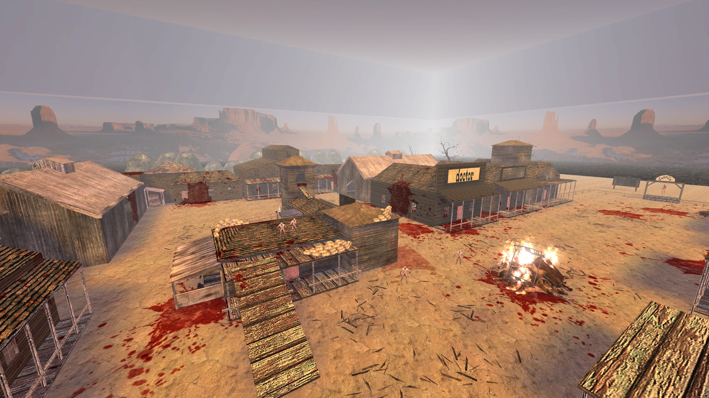
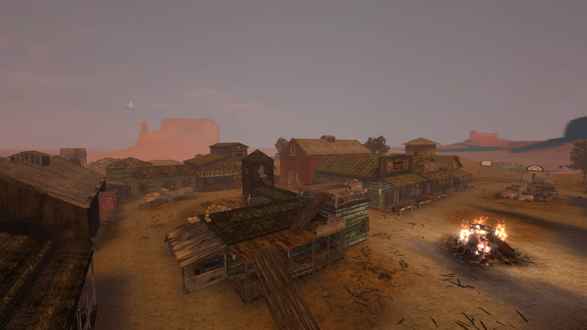

Hello everyone, JK here. Today I am announcing a new project that I am working on. I am working on an extensive edit of a classic Killing Floor 1 map. Canville is a western map by Cannone82[ITA]. Its very old and despite being a classic map pretty much everyone knows, It has a lot of graphical and gameplay problems. I wan't to address these to make the map way better. I am about halway through the visual part so far. If you are interested I have been streaming me mapping on the modding channel. Anyways here a comparison picture with the current version.
 I have been experimenting with Blender to render KF stuff. I have thrown the 2 things I made into theOther tab.
That's it for now, thanks for reading!